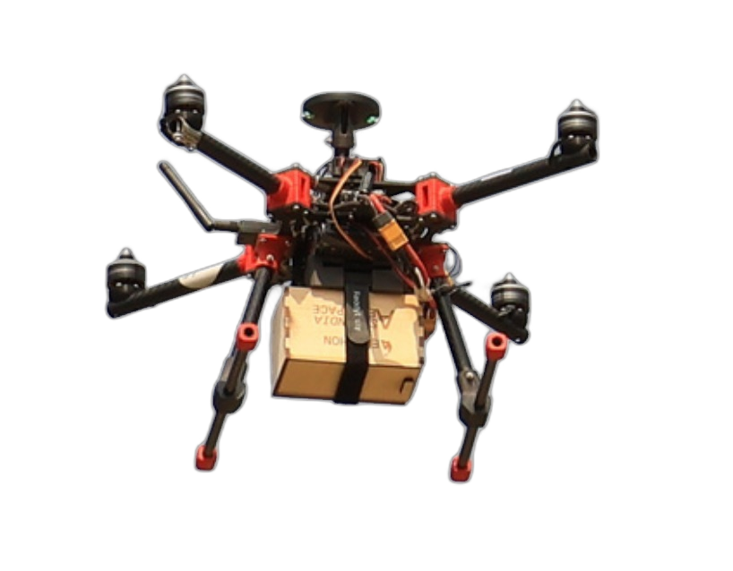

FLAGSHIP PLATFORMS
Flying Phantoms Autonomous Quadcopter
The flagship multi-rotor platform developed by Team Flying Phantoms at AeroBMSCE. Engineered with high-strength carbon-fiber tubular arms, vibration-damping motor mounts, Pixhawk autonomous autopilot, and a quick-release central payload bay.

- Avionics Architecture: Custom flight controller integration with real-time 5.8 GHz FHSS telemetry downlink.
- Payload Module: Secure vibration-isolated enclosure designed for multi-spectral sensor surveys and drop deployments.
- Field Record: Awarded 2nd Prize Overall (₹1,25,000 cash prize) at SAE Aerothon 2025.
Precision Fixed-Wing Heavy-Lift Aircraft
Engineered for the SAE International Aero Design series (USA) by Team Yaksha and Team Blue Impulse. Maximizes aerodynamic payload fraction using an optimized high-lift Selig airfoil, carbon-reinforced leading edge, and laser-cut balsa truss airframe.

- Structural Design: Truss-rib fuselage with optimal stiffness-to-weight ratio to withstand high dynamic landing loads.
- Aerodynamic Simulation: Validated through CFD sweeps in ANSYS Fluent, Flow5, and SolidWorks Flow Simulation.
- Field Record: Top 10 global design ranking at SAE Aero Design West (Fort Worth, Texas).
RESEARCH & DEVELOPMENT INITIATIVES
Indigenous Flight Controller Development
End-to-end hardware and firmware design for an autonomous autopilot unit tailored for high-vibration UAV environments with custom sensor fusion algorithms.
Electronic Speed Controller (ESC) Development
High-efficiency brushless DC motor speed controller featuring Field-Oriented Control (FOC), regenerative braking, and thermal telemetry logging.
GPS-Denied Navigation Systems
Vision- and optical-flow-based autonomous navigation pipeline enabling reliable tactical flight inside indoor arenas, canyons, and dense RF-jammed areas.
Surveillance Aircraft Development
Re-configurable multi-mission fixed-wing UAV equipped with convertible propulsion and an integrated modular payload bay for aerial mapping.
Confidential Defense Project
Advanced aerospace systems initiative conducted in direct collaboration with the Defence Research and Development Organisation (DRDO). Specific technical parameters restricted under institutional agreement.
Morphing Wingtip Mechanisms
Active aeroelastic wingtip structures that adapt aspect ratio and dihedral angle in real time to minimize induced drag across cruise and dash flight phases.
Directional Stability via Micro-Fins
Active micro-fin actuators deployed on the aft fuselage to enhance lateral-directional damping during gust perturbations without requiring oversized vertical stabilizers.
Strategic R&D Subsidization
100% of the research, development, and technical fabrication for our current flight systems is subsidized by the R&D Department at BMS College of Engineering.
Upcoming Competitions (2026–2027)
- NACDEC 2026 (Aeronautical Society of India)
- ISRO IROC (Rover Challenge – ISRO Track)
- NITK Drone Racing 2026
- SAE Aero Design West 2027
- SAE Aerothon 2027